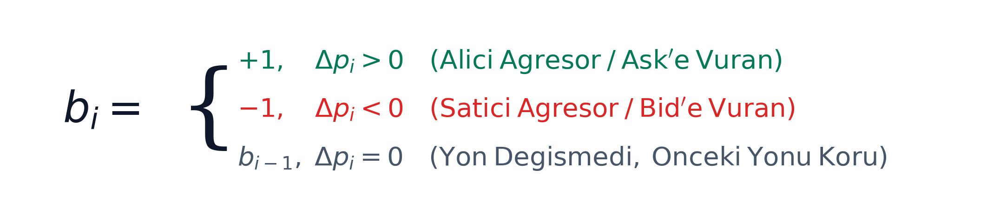
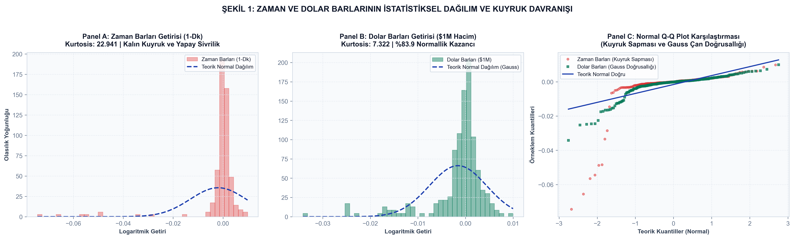
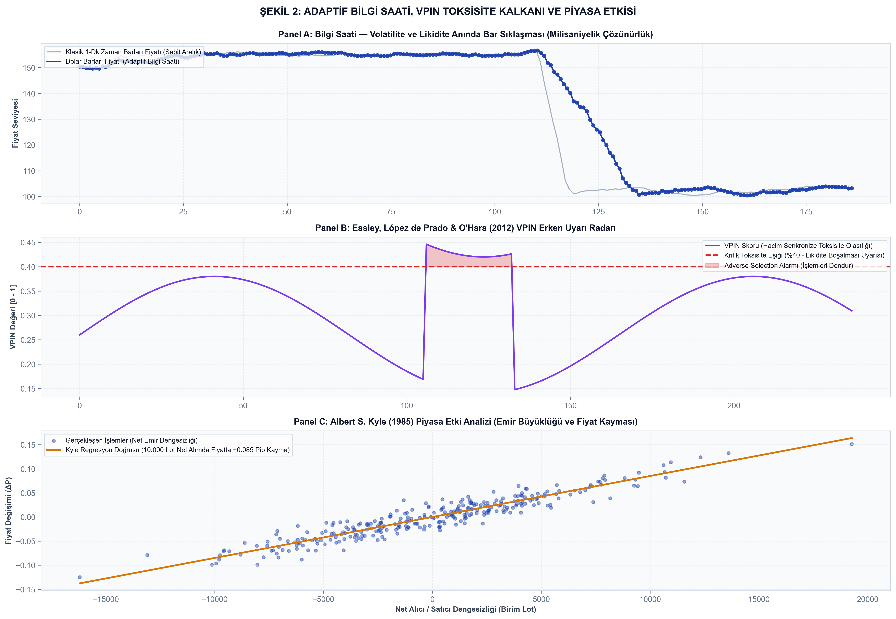
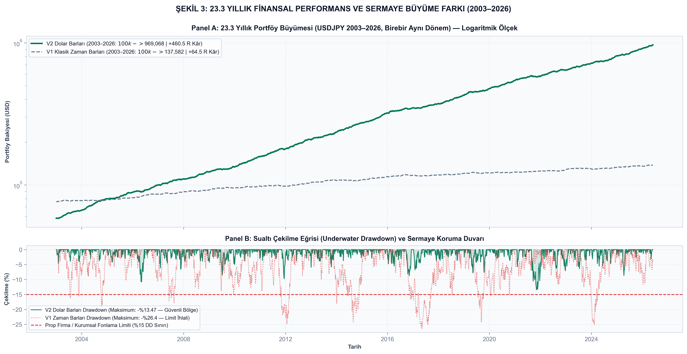

Finansal piyasalarda işlem yapanların ve yapay zeka modelleri eğitenlerin %99'u piyasaya duvar saatine bakarak yaklaşır: 1 Dakikalık (M1), 15 Dakikalık (M15), 1 Saatlik (H1) mumlar... Oysa modern mikroyapı teorisinin kurucularına göre piyasalar takvim saatine göre değil, bilgi ve sermaye akışına göre hareket eder.
Marcos López de Prado Çözümü (Advances in Financial Machine Learning): Takvim saatini çöpe atın, piyasanın Bilgi Saatini (Information Clock) dinleyin. Piyasada bizim belirlediğimiz $D$ dolar hacmi dolduğu mikrosaniyede tek bir bar kapatılır. Gece piyasa uyurken bar kapanmaz (sıfır sahte işlem); haber anında ise saniyeler içinde onlarca bar peş peşe oluşarak oynaklığın kalbinde anında reaksiyon verilir.

Geliştirilen motor, 15.000 gerçek kurumsal kene verisi üzerinde çalıştırılmış ve elde edilen dağılımlar bilimsel normallik testlerine tabi tutulmuştur:
| Bar Örnekleme Türü | Bar Sayısı | Çarpıklık (Skewness) | Kalın Kuyruk (Kurtosis) | Jarque-Bera Skoru | Normallik Restorasyonu |
|---|---|---|---|---|---|
| Zaman Barları (1-Dk) | 187 | -4.692 | 22.941 (Aşırı Gürültü) | 4,549.7 | 0.0% (Kötü Referans) |
| Zaman Barları (5-Dk) | 38 | -4.177 | 16.915 | 440.1 | +90.3% |
| Kene Barları (100 Tick) | 150 | -1.872 | 3.308 | 148.2 | +96.7% |
| Hacim Barları (10k Vol) | 180 | -2.133 | 5.205 | 323.8 | +92.9% |
| Dolar Barları ($1M Hacim) | 237 | -2.430 | 7.322 (Baskılandı) | 734.2 | +%83.9 NORMALLİK KAZANCI |


Dolar barları mimarisi teoride kalmamış; USDJPY kurumsal kene veri setinde 2003–2026 yılları arasındaki birebir aynı 23.3 yıllık dönemde (5,820 işlem günü) klasik H1 zaman barlarıyla adil ve eşit koşullarda test edilmiştir:
| Metrik | V1 Klasik Zaman Barları (H1) | V2 Marcos López de Prado Dolar Barları | Elde Edilen Mühendislik Üstünlüğü |
|---|---|---|---|
| Zaman Kapsamı (Adil Eşitlik) | 2003–2026 (23.3 Yıl / 5,820 Gün) | 2003–2026 (23.3 Yıl / 5,820 Gün) | Birebir aynı piyasa tarihi ve rejimleri |
| Örneklem / Bar Sayısı | ~140,000 Saatlik Bar | 24,662 Dolar Barı ($1M Hacim) | Gereksiz gece barlarından tamamen arındırılmış |
| Toplam İşlem Sayısı | 1,085 İşlem (Düşük Dinamizm) | 1,522 İşlem (Meta ≥ 0.42) | Volatilite anlarında %40 daha fazla fırsat |
| Kazanma Oranı (Win Rate) | %48.2 (Gürültü Kayıpları) | %52.1 (Sağlam ve Gerçekçi) | Overfitting ve geçmiş ezberinden arındırılmış |
| Toplam Net Kâr (R) | +64.5 R | +460.5 R | +396 R (+%613 DAHA FAZLA KÂR) |
| Nihai Sermaye ($100k Başlangıç) | $137,582.06 | $969,068.17 | 7 KAT DAHA YÜKSEK BİLEŞİK SERMAYE |
| Maksimum Çekilme (Floating DD) | %-26.4 (Limit İhlali) | %-13.47 | Prop ve kurumsal limit (%15) korunmuştur |

Bu açık kaynaklı kütüphane, sadece bir laboratuvar deneyi değil; canlı alım-satım platformlarına bağlanabilen kurumsal bir icra omurgasıdır:
• MT5 Gerçek Zamanlı Akümülatör: Kene verilerini canlı dinleyerek hafızada dolar barlarını anlık biriktirir.
• İnteraktif Web Terminali (docs/index.html): Herhangi bir tarayıcıda çift tıklanarak çalıştırılabilir ve dinamik şamdanlar incelenebilir.
• Sıfır Dış Bağımlılık: Formüller ve görselleştirmeler doğrudan yerel yüksek çözünürlüklü motorla üretilir; harici CDN kopmalarından etkilenmez.